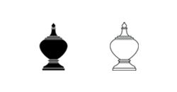

หมากรุกไทย
เม็ด

เป็นตัวหมากทรงผอบสูงที่มีขนาดเล็กที่สุด มีเพียงตัวเดียวตอนเริ่มเกม กติกาการเดินเม็ดมีดังนี้
เดินได้ในแนวทแยงทั้ง 4 ช่องรอบตัว สามารถกินหมากในช่องที่เดินได้

ตำแหน่งการเดิน
เนื่องจากเม็ดเดินได้เฉพาะแนวทแยง จึงไม่สามารถเดินไปยังบางช่องบนกระดานได้ (ซึ่งหากใช้กระดานสลับสีจะเห็นได้ชัดเจน)

ช่องที่ไม่สามารถเดินไปถึงได้
แบบทดสอบ